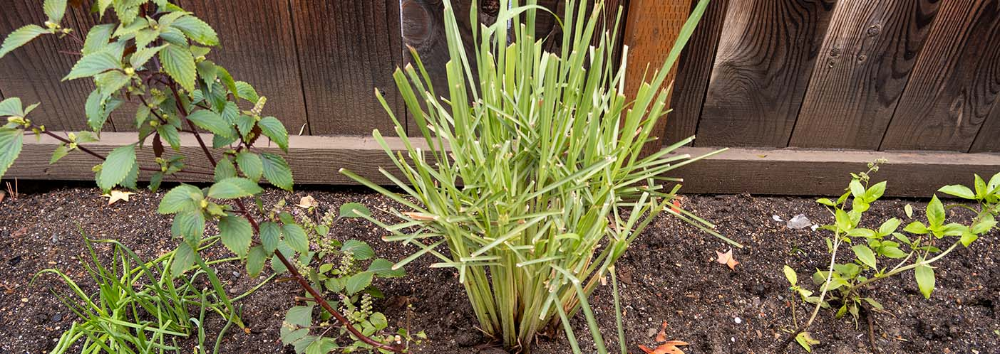
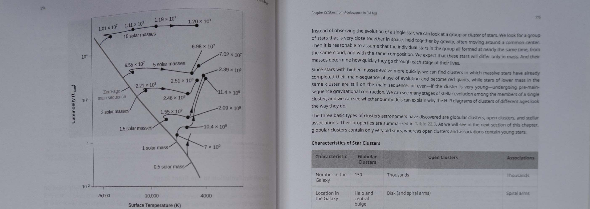

a garden without the gardening

Taking on world hunger together one seed at a time
Our Mission
Accessibility to fresh and healthy food has been an ever growing threat to our lively hood, so we are working hard on creating a solution where anyone can grow fruits and vegetables anywhere at anytime without the hastle of actual farming or gardening.
How fen can help you and your community
With fen, you no longer need to go to the grocery store and purchase groceries. Healthy and fresh fruits and vegetables are a walk away from your doorstep. Create bonds with your neighbors through the shared experience of fen.

Our journey to creating fen
1627
Hydroponics are first researched in Francis Bacon’s book Sylva Sylarum, or ‘A Natural History’

1913
The Haber process, also called the Haber-Bosch process, made it possible to produce ammonia, and thereby fertilize, on an industrial scale
1947
Hungarian scientist Dennis Gabor first came up with the concept of a hologram while trying to improve the resolution of electron microscopes. The word comes from “holos,” the Greek word for “whole,” and “gramma,” which is the term for message.
1990s
Major advances in all areas of AI, with significant demonstrations in machine learning, case-based reasoning, multi-agent planning, scheduling, uncertain reasoning, natural language understanding and translation, and other topics.
2005
Lasers used to replace stickers by writing on food to “track and trace” and identify individual pieces of fresh fruit.

2012
The first holographic display is implemented in car’s interactive navigation display system.

2029
fen is created.

So what can fen actually do?
- Plant seeds
- Water and maintain your crops
- Adjust the inner atmosphere to accomodate for every plant
- Analyze the status of each plant to ensure that they are happy and healthy
- Pick crops that are ready to be harvested and place them in a built in fridge for you and your community to access
- Remove any debris or failing crops into the compost
- Reuse compost as nutrients for the next generation of crops
- Grow a large variety of crops of any size
...all while remaining fresh and organic!
Cutting edge AI automation
fen’s built in AI technology will take care of your crops all while showing how they’re doing! You can even go into more detail of each plant and learn more about them, such as nutrientional facts and delicious recipies ranging from quick and easy to complex! All of this is available using our innovative hologram projection screen that will show you information along the surface of your fen.
What can you grow with fen?
fen accommodates for a large variety of fruits and vegetables! Each fen is customizable to be able to plant both small and large size crops. You can even get a special fen that can house large fruit trees!
Not nearby? You can check out the fen on your phone!
Need to know how your crops while youre away on a vacation? Or pick up some fruits and veggies on your way home from work? No worries! You can check on the status of your crops using the fen app! All information that is available on your fen is also available on your phone. You can even ask your fen to pre-pick your crops before you get there.
So what can fen actually do?
- Plant seeds
- Water and maintain your crops
- Adjust the inner atmosphere to accomodate for every plant
- Analyze the status of each plant to ensure that they are happy and healthy
- Pick crops that are ready to be harvested and place them in a built in fridge for you and your community to access
- Remove any debris or failing crops into the compost
- Reuse compost as nutrients for the next generation of crops
- Grow a large variety of crops of any size
...all while remaining fresh and organic!
Cutting edge AI automation
fen’s built in AI technology will take care of your crops all while showing how they’re doing! You can even go into more detail of each plant and learn more about them, such as nutrientional facts and delicious recipies ranging from quick and easy to complex! All of this is available using our innovative hologram projection screen that will show you information along the surface of your fen.
What can you grow with fen?
fen accommodates for a large variety of fruits and vegetables! Each fen is customizable to be able to plant both small and large size crops. You can even get a special fen that can house large fruit trees!
Not nearby? You can check out the fen on your phone!
Need to know how your crops while youre away on a vacation? Or pick up some fruits and veggies on your way home from work? No worries! You can check on the status of your crops using the fen app! All information that is available on your fen is also available on your phone. You can even ask your fen to pre-pick your crops before you get there.
Check out who's been helped by fen!
Bob
Construction Worker
Bob is a construction worker who can’t afford fresh and healthy food because of his low wage and needs to support his family. He also doesn’t have time to grow any fresh fruits or vegetables. However, he wants to keep him and his family healthy and proposes to his community to invest in fen to support him, his family and the neighborhood. Everyone pitches in to buy multiple units of fen and begin growing multiple fruits and vegetables. Within two months, they are able to harvest their first vegetables and continue to monitor the other crops as they grow. After two years, Bob and the other neighbors are able to gather fresh fruits and vegetables for their families to eat and continue to plant seeds whenever they need to. They check and divy up the produce using the phone app.

Bobbert
College Student
Bobbert is a college student currently studying at San José State University. He lives in a dorm room and due to the cost of the dorms and tuition, he can not afford to purchase fruits and vegetables. Bobbette eats cup noodles everyday, leading to his health and quality of his work deteriortating. After Bobbert is struggling with this and talks about it to other students, they all agree to lobby for SJSU to purchase a fen to benefit students like him. After SJSU acquired one for campus, Bobbert is a frequent visitor and is now happily eating healthy meals and keeping up with his studies. He and his classmates bond over eating and creating healthy meals.


Where can you get fen?
Visit Home Depot, Lowes, Walmart, or Costco to purchase a fen for yourself or your community! They can also set up installation services for you. Be sure to inquire them for more information.
Find a community fen near you!
Come help contribute with your community to create a place where everyone can come get fresh produce! Enter your address below, and we’ll find a nearby community fen for you to visit!
Nearby Locations
Downtown San Jose
1234 Main Street,
San Jose, CA 95122
San Jose State University
1 Washington Square,
San Jose, CA 95122
San Jose Japantown
2222 Japantown,
San Jose, CA 95122

Contact Us
Let us know if you need a repair for your fen by selecting the button below! If you have any other concerns, feel free to contact us through phone or email!
Request Repair
Phone Number: (123)-456-7890
Email: fen@gmail.com